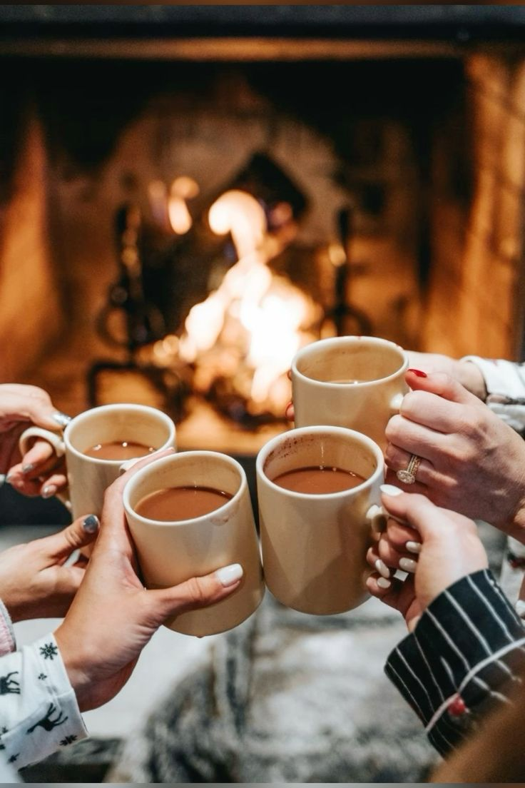

„Tvůj bezpečný kout, kde můžeš zpomalit, zhluboka dýchat a obnovit svou vnitřní rovnováhu.“
Klikni na téma, které tě zajímá:
„Dýchej. Nemusíš mít všechno pod kontrolou.“
„Není nutné mít všechno pod kontrolou, stačí být tady a teď.“
„Klid je stav mysli, který si můžeš vybrat každý den.“
„Každá bouře nakonec odezní – tak jako napětí v tobě."
„Klid není absence problémů, ale schopnost je unést."
„Uvolni ramena, uvolni mysl, uvolni srdce."
„Dělej jednu věc v klidu. To stačí.“
„Malé kroky každý den vedou k velkým výsledkům.“
„Soustřeď se na to, co můžeš ovlivnit, a zbytek nech být.“
„Kvalita je důležitější než kvantita.“
„Práce, která dává smysl, se zvládá snáz.“
„Chyby nejsou selhání, ale lekce.“
„Produktivita začíná klidem a pořádkem v mysli.“
„Není ostuda požádat o pomoc. Ostuda je zůstávat v tichém vyčerpání.“
„Motivace je jako oheň – potřebuje pravidelnou péči.“
„Každý úkol je příležitost se něco naučit.“
„Práce je součást cesty, ne celý cíl.“

„Laskavost je forma síly.“
„Vztahy nejsou o dokonalosti, ale o porozumění a trpělivosti.“
„Každý vztah je lekce, která nás učí o nás samotných.“
„Komunikace je most, který spojuje srdce.“
„Respekt a laskavost jsou pevnější než očekávání.“
„Vztahy prospívají tam, kde je více porozumění než kritiky.“
„Lidé se mění a vztahy rostou, když jim dáme prostor.“
„Sdílení radosti i smutku posiluje pouto.“
„Vztahy jsou zrcadlem – ukazují, co v sobě potřebujeme pochopit.“
„Naslouchat znamená milovat beze slov.“
„Každý vztah stojí na malých gestech, která se skládají v blízkost.“
„Nejlepší způsob, jak předpovědět budoucnost, je ji vytvořit.“
„Učení je dobrodružství, ne závod.“
„Každý den můžeš začít znovu – s čistou tabulí.“
„Chyby jsou známkou toho, že to zkoušíš.“
„Trpělivost je klíčem k pochopení.“
„Učení je investice do sebe sama.“
„Každá otázka tě posune dál.“
„Paměť roste opakováním, porozumění přemýšlením.“
„Odměň se za snahu, ne jen za výsledek.“
„Sdílení znalostí posiluje pochopení.“
„Každý den se můžeš naučit něco, co ti změní pohled.“
„Rodina je místo, kde začíná láska a nikdy nekončí.“
„Domov nejsou zdi, ale lidé, kteří tě přijímají.“
„Rodina učí trpělivosti, odpuštění a bezpodmínečné lásce.“
„Každý člen rodiny přináší do života jedinečné světlo.“
„Společné chvíle jsou poklady, které čas nemůže vzít.“
„Rodina je zázemí, kam se srdce vrací, i když se svět mění.“
„Láska v rodině se nepočítá, jen se cítí.“
„Naslouchání v rodině je dar, který se vrací.“
„Rodina drží, když se cítíš ztracená.“
„I malá laskavost v rodině má velkou hodnotu.“
„Přátelé jsou rodina, kterou si vybíráme.“
„Pravé přátelství roste z důvěry a respektu.“
„S přáteli je smích radostnější a starosti lehčí.“
„Přátelství není o množství času, ale o jeho kvalitě.“
„Dobrý přítel rozumí i tvému tichu.“
„Přátelé ti pomáhají najít cestu, když ji sama nevidíš.“
„Sdílení radosti nás učí vděčnosti.“
„Přátelství je vzácné – pečuj o něj.“
„Skutečný přítel ti dovolí být sama sebou.“
„Přátelství se pozná podle laskavosti, ne podle slov.“
„Péče o sebe není sobeckost, je to nutnost.“
„Odpočinek je součástí rovnováhy.“
„Dovol si být tady a teď.“
„Každý den si dopřej malou chvíli pro sebe.“
„Sebepéče začíná uznáním vlastních potřeb.“
„Mé tělo i mysl si zaslouží laskavost.“
„Když se starám o sebe, mohu lépe pečovat o ostatní.“
„Malé radosti vedou k vnitřní rovnováze.“
„Říkat „ne“ je součást respektu k sobě.“
„Sebepéče je investice do energie a klidu.“
Když se květ přibližuje, nadechni se.
Když se oddaluje, vydechni.
Když se pohyb zastaví, na chvíli spočiň.
„Dech je most mezi tělem a myslí.“
Nádech: pomalu nosem
Výdech: ještě pomaleji ústy
Pauza: krátké spočinutí
Afirmace jsou pozitivní věty, které mění vnitřní dialog, podporují klid, sebevědomí a motivaci.
Pomáhají přijímat sebe i život s větší laskavostí.
Naslouchej sobě a klikni:
✧ Dýchám pomalu a moje tělo se uvolňuje.
✧ Nemusím mít všechno pod kontrolou.
✧ V tomto okamžiku jsem v bezpečí.
✧ Dovoluji si zpomalit.
✧ Klid začíná jedním vědomým nádechem.
✧ Teď nemusím nic řešit.
✧ Je v pořádku být unavená
✧ Jsem dost dobrá taková, jaká jsem dnes.
✧ Nemusím být dokonalá, abych měla hodnotu.
✧ Věřím si, i když si nejsem jistá.
✧ Moje cesta je jedinečná.
✧ Dovoluji si růst vlastním tempem.
✧ Moje rozhodnutí mají váhu.
✧ Dnes stačí málo.
✧ I to, že jsem vstala, se počítá.
✧ Nemusím být silná pořád.
✧ Tento den mě nedefinuje.
✧ Je v pořádku cítit se tak, jak se cítím.
✧ Dělám, co můžu – a to stačí.
✧ I tohle přejde.
✧ Dnes půjdu krok za krokem.
✧ Dovoluji si začít pomalu.
✧ Dnes budu k sobě laskavá.
✧ Můj den nemusí být dokonalý, aby byl dobrý.
✧ Otevřu se tomu, co den přinese.
✧ Dělala jsem dnes, co bylo v mých silách.
✧ Dovoluji si odložit dnešní starosti.
✧ Teď je čas odpočinku.
✧ Můj den může skončit klidem.
✧ Teď je čas odpočinku.
Prostor pro zpomalení, návrat k sobě a ochranu vlastní energie.
Uznání vlastní lidskosti
Není ostuda být unavená. Život je náročný a každý z nás má své limity.
Přijmi, že nejsi superhrdinka, i když často musíš nést hodně.
Denní kotvy klidu
Najdi si každý den alespoň jednu chvíli, kdy se zastavíš, zhluboka dýcháš
a dovolíš si být jen tady. I pět minut je cenné.
Malé kroky místo obrovských očekávání
Nepokoušej se zvládnout všechno najednou. I malý úspěch je výhra.
Vnitřní dialog s laskavostí
Sleduj, jak se ke svému vnitřnímu já chováš.
Nahraď kritiku soucitem, mluv k sobě jako k nejlepšímu příteli.
Pravidelné doplňování energie
Není to jen odpočinek – je to vyživování těla, mysli i duše:
krátká procházka, teplý čaj, meditace, hudba, kniha.
Říkat „ne“ bez výčitek
Každé „ano“ něčemu vyčerpávajícímu je ztráta energie.
Uč se chránit své hranice.
Soustředění na to, co můžeš ovlivnit
Klid i síla rostou tam, kde se zaměřuješ na svůj malý,
ale skutečný vliv.
Podpora a sdílení
Není slabost požádat o pomoc. Sdílení tíhy uleví.
Rituály a symboly
Malé rituály přinášejí bezpečí a stabilitu:
ranní dech, svíčka, deník, krátká meditace.
Oslava malých vítězství
I přežití náročného dne je úspěch.